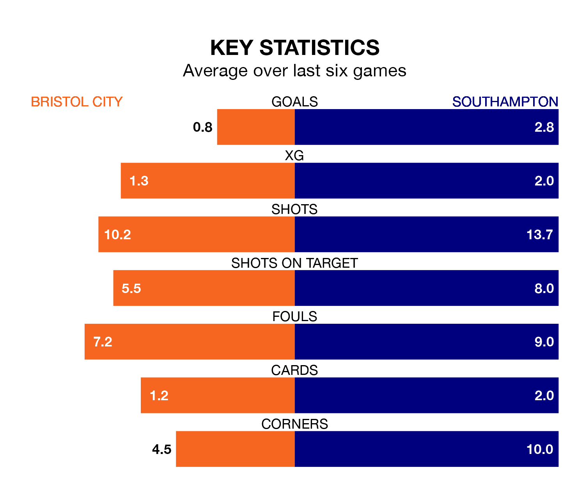

Southampton are strong favourites to take all three points despite Bristol City's home advantage in Tuesday's late match at Ashton Gate.
*Betting Company* are offering odds of 1.76 on Southampton sealing the win, with the visitors sitting second in EFL Championship table.
City, who are 12th in the league and 23 points behind the Saints, are priced at 4.37 to win. A draw is set at 3.78.
With 60 goals in 30 games so far this season, Southampton are the league's second-highest scorers with 2.0 goals per game. And they are conceding fewer than average, letting in 35 goals at a rate of 1.2 per game.
City, meanwhile, are below average scorers, with 1.1 goals per game, compared to a league average of 1.4. They have also conceded 1.1 goals per game.
The Robins are in disappointing form in EFL Championship, with one win and two draws from their last six games.
With five wins and a draw over that period, the Saints' form is much better – they have taken 16 points from 18, compared to the hosts' five.
In Adam Armstrong, the away side have one of the league's most on-form strikers so far this season. He has notched 15 goals in 30 appearances, to sit third in the scoring charts.
His goal rate of one every 172 minutes is quicker than that of Tommy Conway, City's top scorer with a goal every 238 minutes, and a total of six goals in 24 games.
City's last match was on Saturday, a 2-1 win against Middlesbrough, with Jason Knight and Matty James getting the goals for the Robins.
Southampton beat Huddersfield Town 5-3 last time out, also on Saturday, with Joe Rothwell (two), Samuel Edozie, Sékou Mara and Tom Lees (own goal) on the scoresheet.
Tuesday's match will be refereed by Matt Donohue, who has taken charge of 18 EFL Championship games so far this season, issuing one red card and booking 78 players. He has awarded two penalties.
The last City game Donohue refereed was a 4-1 home win against Plymouth Argyle on September 19. He is yet to oversee a match featuring Southampton this season.
Updated: 09:02 (UTC), 13/02/24